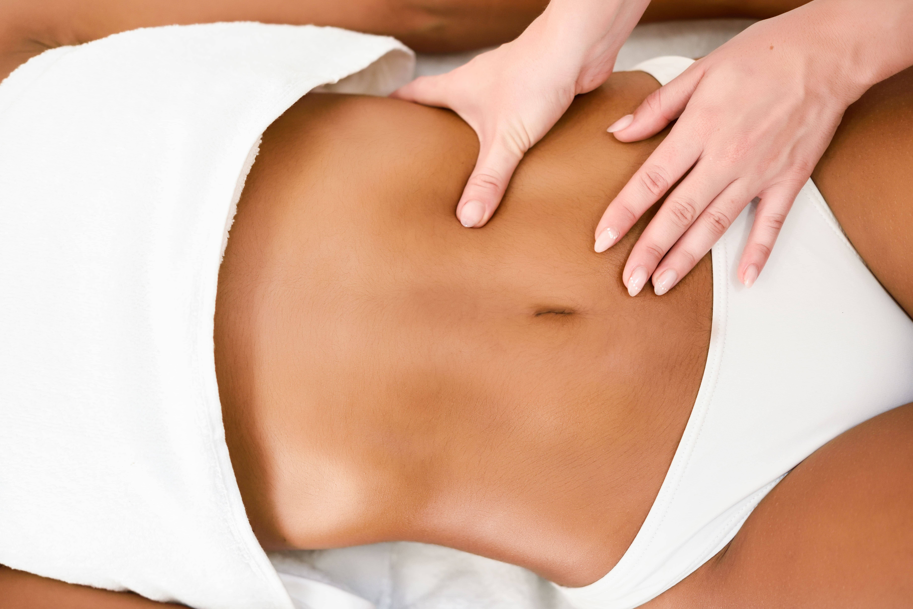

Drenagem linfatica: o que é
"A drenagem linfática é uma técnica de massagem que trabalha o sistema linfático, estimulando-o a trabalhar de forma rápida, movimentando a linfa até os gânglios linfáticos. Essa técnica foi desenvolvida em 1932 pelo terapeuta dinamarquês Vodder e sua esposa e, posteriormente, foi aprimorada, tornando-se popular."
"A principal função da drenagem linfática é acelerar o processo de retirada dos líquidos acumulados entre as células, e os resíduos metabólicos; encaminhando-os aos vasos capilares e, por meio de movimentos específicos, direcionando para que sejam eliminados. Essa técnica também estimula a regeneração dos tecidos, melhora o sistema imunitário, é relaxante e tranquilizante, combate a celulite e a gordura localizada e ainda melhora a ação anti-inflamatória do organismo."

"De forma manual a drenagem é feita a partir de círculos com as mãos e com o polegar, movimentos combinados e pressão em bracelete. Por aparelhos, a drenagem é feita através de um sistema inteligente de computador que infla e desinfla uma espécie de bolsa que assim como a drenagem manual melhora a condição das linfas." "É importante saber que essa técnica é contraindicada para pessoas com infecções agudas, insuficiência cardíaca, trombose, hipertensão, câncer, asma brônquica e bronquite asmática."
Quais os benefícios da Drenagem Linfática?
A drenagem linfática tem diversos benefícios, sendo recomendada para tratamentos estéticos e tratamentos com foco no sistema linfático. Confira alguns benefícios:
- Aumenta a oxigenação dos tecidos;
- Favorece a eliminação de toxinas;
- Aumenta a absorção de nutrientes;
- Melhora as condições de absorção intestinal;
- Diminui a retenção de líquidos;
- Estimula e melhora o sistema imunológico;
- Acaba com a sensação de peso nas pernas;
- Diminui edemas;
A drenagem linfática promove resultados imediatos?
Sim, é possível observar resultados desde a primeira sessão. Muitas pessoas percebem a diminuição na retenção de líquidos logo após o procedimento, além da sensação de conforto e bem-estar. O mais indicado é que sejam feitas pelo menos 10 sessões, para que os resultados sejam mais notáveis. Depois disso, o espaçamento entre uma sessão e outra pode ser maior, servindo para fazer a manutenção dos resultados apenas.
Drenagem ajuda a melhorar os sintomas da TPM?
Um sintoma que a drenagem ajuda a eliminar é o inchaço, pois ela age diretamente no combate da retenção de líquidos. Além disso, ela ajuda no controle da ansiedade, por ter efeito relaxante.